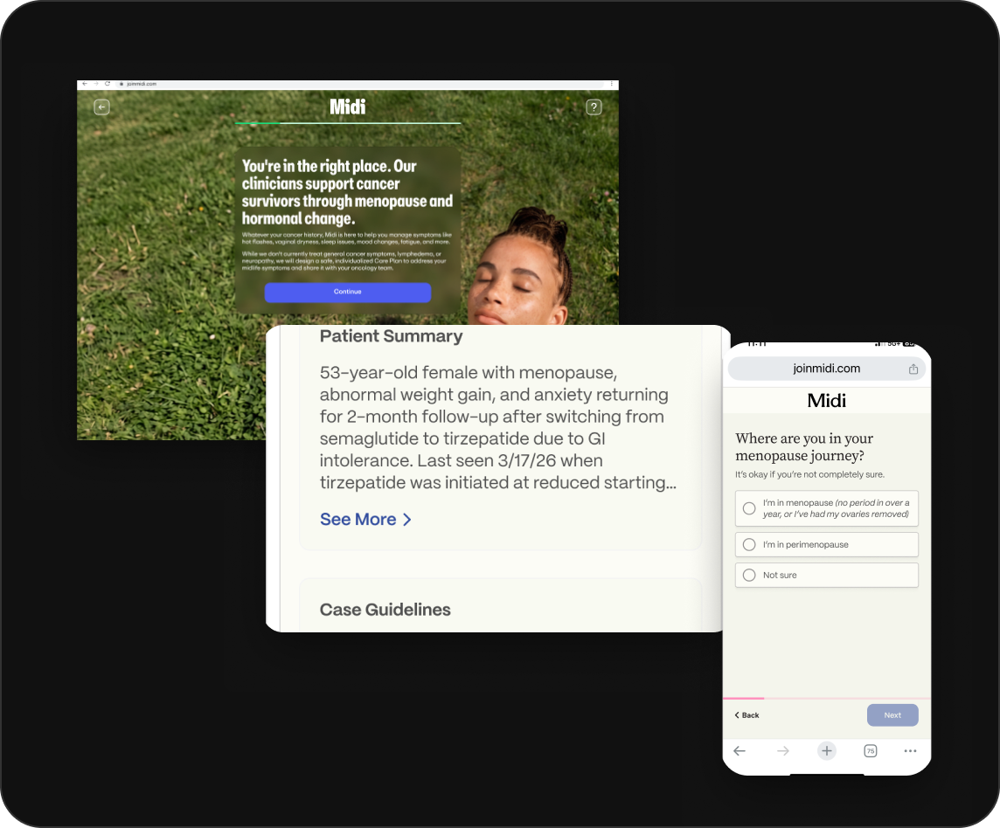
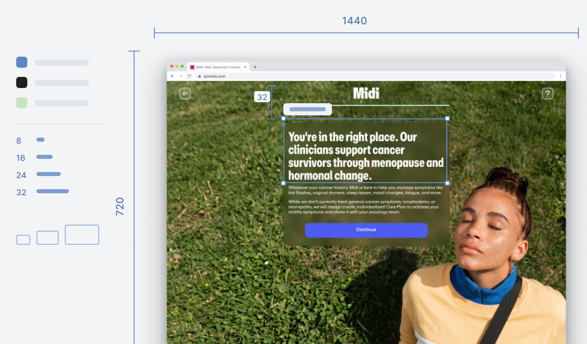
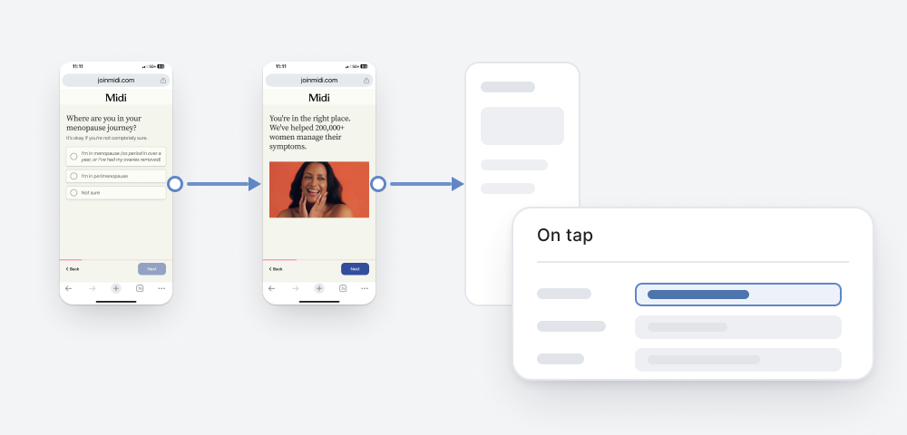
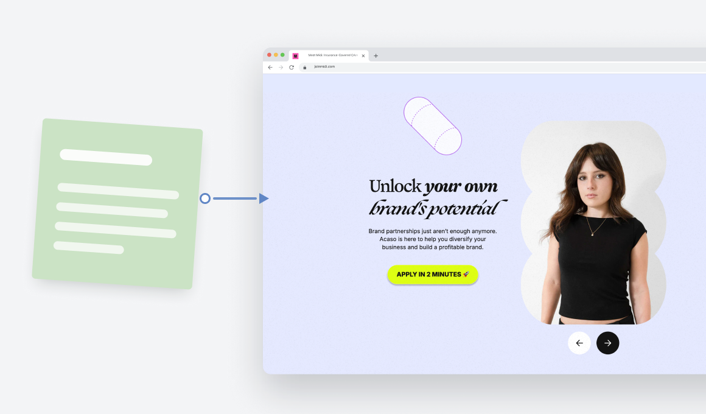
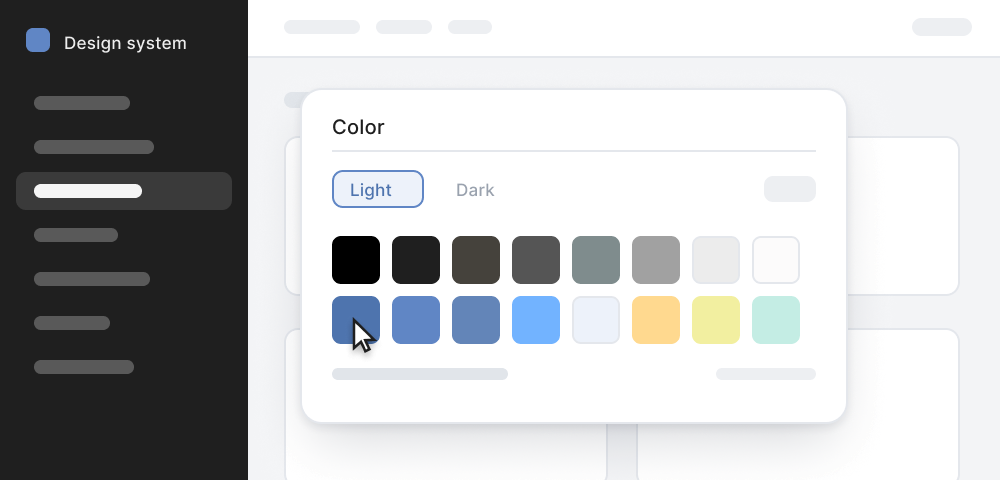
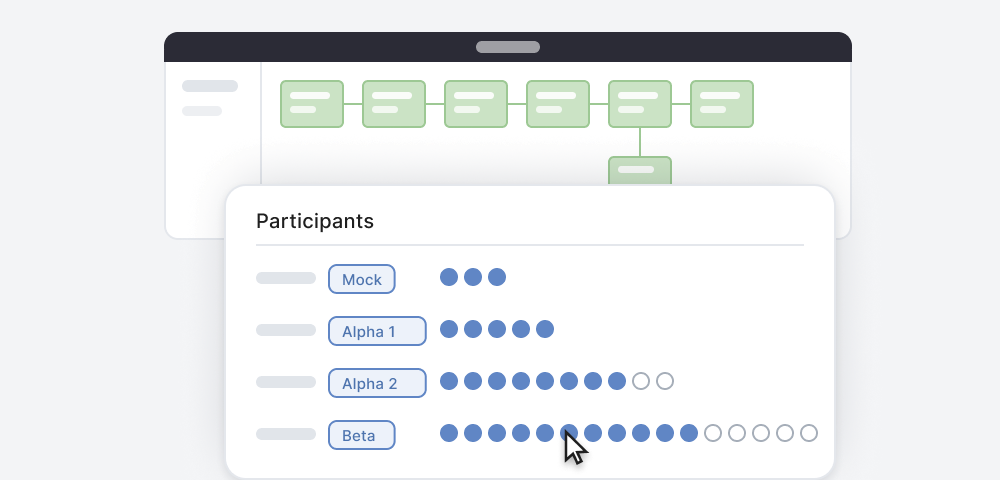

I’m a strategic designer who defines product vision, drives stakeholder alignment, and executes with pixel-perfect precision.
Currently: Building a new model of healthcare at Midi Health
Skills
I turn cross-functional friction into clearly-defined MVPs. Having worked across visual design, copy, and code, I speak the language of every team at the table.
-
UI Design
Form meets function.
I bring systems thinking and visual polish to product designs. When I make a visual decision like “How big should this button be?”, my thinking is grounded in business strategy.

-
Prototyping
Make it real, learn faster: I prototype in code and Figma so my team can test quickly.
Figma when the interaction is the point. Claude when a working prototype beats a mockup. Whatever the team already uses, when that matters more. The goal is a yes, not an artefact.

-
Content Design
As a former writer, my visual work is the bridge between copy and graphics.
I started my career as a writer and content marketer at NerdWallet, and I never quite stopped: I make sure an interface’s content strategy, flow, and microcopy make sense before it gets decorated.

-
Design Systems
I replace one-off design elements with scalable, reusable UI patterns.
I partner with engineering teams to reconcile duplicated components and inconsistent UX patterns—from buttons to entire forms. I map the gaps and set a course toward a shared system so teams work efficiently and users get a more consistent, delightful experience.

-
User Research
Listen first, design second.
I combine user testing, surveys, and direct observation to guide product decisions. At Midi, this research informed improvements that increased signup conversion by 5% and clinician satisfaction by 10%.
